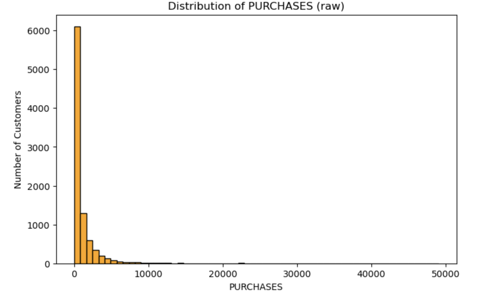
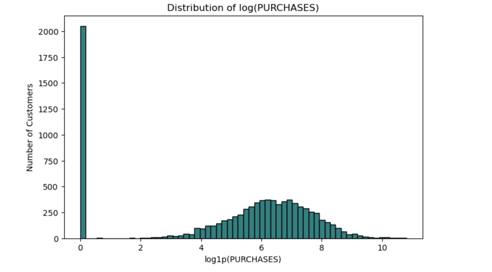
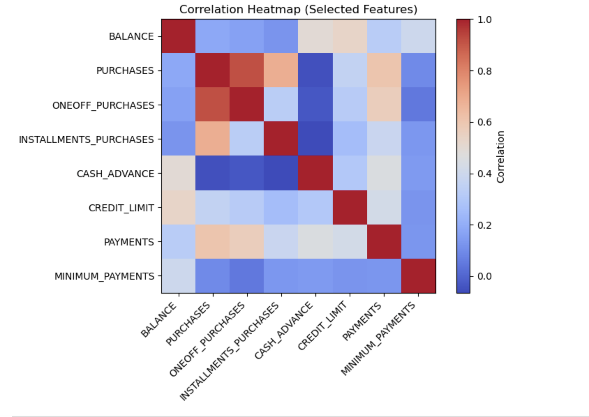
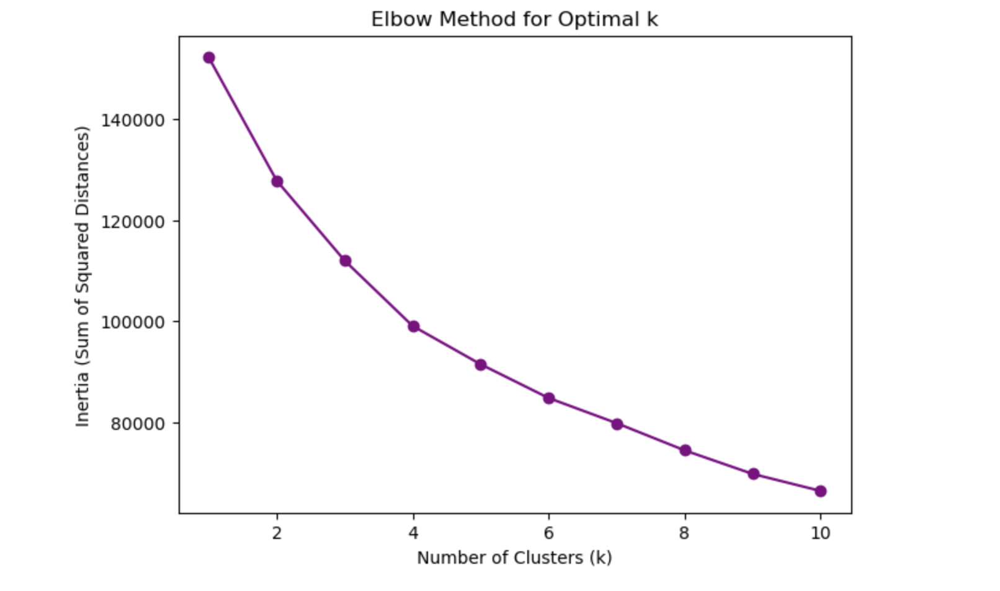
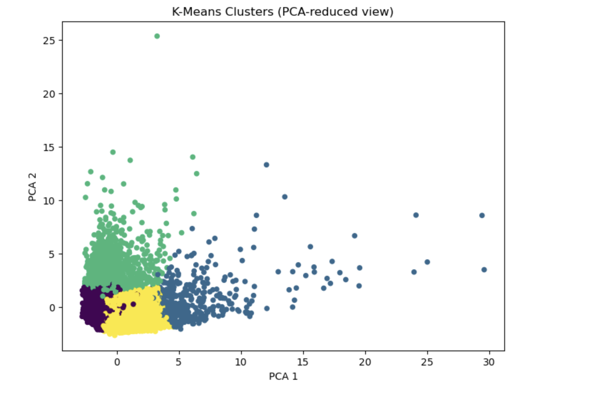
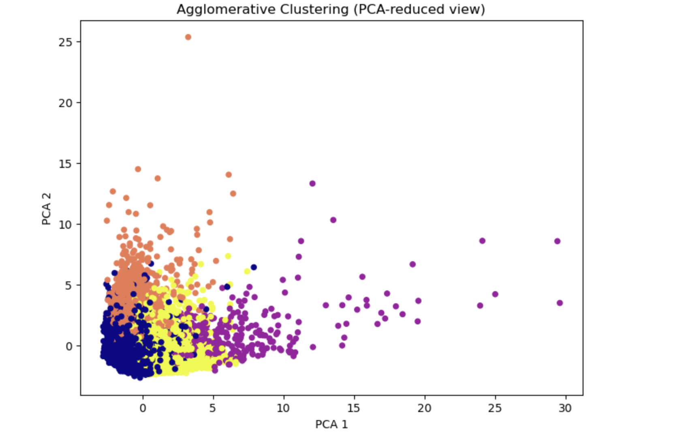

Exploring patterns through unsupervised learning.
In today's data-driven economy, credit card usage is an essential part of everyday financial life. People use their cards in vastly different ways some pay off their balances monthly, others rely heavily on credit, and some make frequent cash advances or purchases. Understanding these behaviors is crucial for banks and financial institutions that aim to improve customer satisfaction, manage risk, and design more personalized services. With the growth of machine learning, we can now ask an important question: Can we identify distinct groups of credit card users based on their spending and payment patterns?
This project explores that question using clustering techniques to uncover natural groupings among customers without prior labels or classifications. The dataset contains detailed financial behavior features such as balance amounts, purchase frequency, cash advances, credit limits, and payment histories. By analyzing these variables and applying clustering algorithms, the goal is to discover meaningful customer segments such as high spenders, minimal users, or revolving credit customers and understand what characterizes each group.
The purpose is not only to perform clustering but also to reflect on what these clusters reveal about financial habits and their potential applications. If we can meaningfully segment users based on real-world financial data, such insights could help institutions design better financial products, detect risky patterns earlier, and promote responsible credit usage. At the same time, it raises important ethical questions about privacy, fairness, and how such models should be used when dealing with sensitive financial information.
Clustering is an unsupervised machine learning technique used to discover hidden patterns or natural groupings within data when there are no predefined labels. Unlike classification, where each record belongs to a known category, clustering lets the data speak for itself identifying groups of similar observations based purely on their feature values. In essence, clustering helps us uncover structure and relationships that might not be obvious at first glance.
One of the most common algorithms for clustering is K-Means. It works by dividing data into k groups, where each group contains points that are most similar to each other based on distance metrics like Euclidean distance. The algorithm starts by selecting k random centroids, then repeatedly assigns points to the nearest centroid and updates the centroids' positions until the clusters stabilize. K-Means is popular because it's simple, efficient, and works well with numerical data—making it ideal for financial datasets like ours.
Another approach, Agglomerative Hierarchical Clustering, builds clusters step by step. It begins by treating every data point as its own cluster, then progressively merges the most similar pairs until all points belong to a single large cluster. This creates a hierarchy, or "dendrogram," which can be cut at different levels to form distinct clusters. Unlike K-Means, hierarchical clustering doesn't require specifying the number of clusters in advance and provides a more detailed view of how groups relate to one another.
Both methods aim to group data points that are internally cohesive but externally separated—meaning customers within the same cluster behave similarly, while those in different clusters show distinct financial patterns. By applying these techniques, we can better understand the diversity of credit card users and reveal segments that might otherwise remain hidden in raw numerical data.
The dataset used for this project is the Credit Card Customers dataset (CC GENERAL), which contains real-world data on the spending and payment behavior of credit card users. It includes 8,950 customer records and 18 numerical features, each describing different aspects of how customers manage and use their credit cards. The data is ideal for clustering because it has no predefined labels allowing us to naturally group customers based on similarities in their financial habits.
This dataset can be found on several open data platforms, including Kaggle's "Credit Card Dataset for Clustering", and is widely used for unsupervised learning and segmentation projects. Each row represents one customer, and each column provides a quantitative measure of their activity over a six-month period.
Some of the most important features include:
Since the dataset only contains numerical variables, it simplifies preprocessing and allows direct use of algorithms like K-Means and Agglomerative Clustering. However, it also requires scaling to ensure that features measured on different scales (e.g., dollars vs. frequencies) do not unfairly dominate the distance calculations used in clustering.
Overall, this dataset provides a rich view of diverse customer behaviors from frequent spenders and high-limit users to low-activity customers making it an excellent foundation for uncovering patterns in financial behavior through clustering.
Before clustering, it was important to explore the data to understand customer behavior and identify any patterns or irregularities. The dataset includes 8,950 customers and 17 numerical features after removing the ID column. Initial inspection showed that variables like BALANCE, PURCHASES, CASH_ADVANCE, and PAYMENTS were highly right-skewed, meaning most customers have low spending and a few have very high amounts. A histogram of PURCHASES made this clear, revealing that heavy spenders are rare but influential.
To better interpret the data, a log transformation was applied to spending features. The log-transformed PURCHASES distribution appeared more balanced, making differences between typical and high-spending users easier to see. A correlation heatmap of financial variables also showed strong relationships among purchase-related features and moderate links between BALANCE, CREDIT_LIMIT, and PAYMENTS.
One notable finding was that many customers make few or no purchases at all, suggesting different types of usage patterns such as low-activity versus high-activity users. These insights guided preprocessing decisions, such as scaling and transforming features, to ensure clustering accurately reflects real behavioral differences rather than differences in numeric scales.
Understanding the distribution and relationships within the data helped determine which preprocessing steps were necessary for effective clustering. The right-skewed distributions indicated the need for log transformations, and the varying scales across features highlighted the importance of standardization before applying distance-based algorithms like K-Means.

The original PURCHASES distribution is highly right-skewed, with most customers making low purchases and a few heavy spenders.

After log transformation, the distribution is more balanced, making it easier to distinguish between different spending levels.

The heatmap reveals strong correlations among purchase-related features and moderate relationships between balance, credit limit, and payments.
Before applying clustering algorithms, the dataset needed to be cleaned and standardized to ensure reliable results. First, the CUST_ID column was removed since it serves only as an identifier and does not contribute to behavioral patterns. Missing values were then handled — specifically, MINIMUM_PAYMENTS (313 missing) and CREDIT_LIMIT (1 missing) were replaced with each column's median value. Median imputation was chosen because it's less affected by outliers, which are common in financial data.
CUST_ID as it does not represent customer behavior or contribute to clustering.MINIMUM_PAYMENTS (313 missing) and CREDIT_LIMIT (1 missing) to preserve robustness against outliers.PURCHASES, BALANCE, CASH_ADVANCE, and PAYMENTS to reduce the effect of extreme values and make patterns more visible.Since the dataset contains only numerical features, no categorical encoding was required. However, because many variables had very different scales (for example, BALANCE could reach thousands while FREQUENCY values ranged between 0 and 1), standardization was applied using a z-score scaler. This step ensures that each feature contributes equally to the distance calculations used in clustering.
The log transformations and standardization created a clean, consistent dataset suitable for distance-based clustering methods like K-Means and Agglomerative Clustering, preventing features with larger numeric ranges from dominating the clustering process.
To uncover natural groupings among credit card users, both K-Means and Agglomerative Clustering were applied to the preprocessed dataset. The features were first standardized to ensure that variables on larger scales, such as BALANCE and PAYMENTS, did not dominate smaller, frequency-based features. Clustering was then performed on the scaled data to identify customers with similar financial behaviors.
To determine an appropriate number of clusters for K-Means, the Elbow Method was used. By plotting the sum of squared distances for different values of k, a noticeable bend appeared around k = 4, indicating that four clusters provided a good balance between accuracy and simplicity. The K-Means model was then trained with four clusters, assigning each customer to one of the groups based on their spending and payment patterns.
To validate and compare results, Agglomerative Clustering was also performed using the same number of clusters. While K-Means tends to form more evenly sized clusters, Agglomerative Clustering can reveal hierarchical relationships between customers, showing which groups are more similar to each other. A PCA visualization of the results displayed clear separation between clusters, confirming that the chosen preprocessing and scaling steps effectively highlighted distinct behavioral patterns.
Overall, both methods supported the idea that credit card users can be meaningfully segmented into groups based on spending activity, repayment habits, and credit usage. These clusters form the foundation for further interpretation and insights in the storytelling section.

The elbow plot shows a noticeable bend at k = 4, indicating four clusters provide a good balance between model complexity and accuracy.

PCA visualization shows clear separation between the four clusters identified by K-Means, with each color representing a distinct customer segment.

The dendrogram reveals hierarchical relationships between customer groups, showing how clusters merge and which segments are most similar to each other.
After applying K-Means and Agglomerative Clustering, four distinct groups of customers emerged, each representing a different type of credit card user. The clusters were analyzed by comparing their average values for key features such as BALANCE, PURCHASES, CASH_ADVANCE, CREDIT_LIMIT, and PAYMENTS to understand what behaviors defined each segment.
The clustering analysis successfully identified four meaningful customer segments, each with distinct financial behaviors and patterns. These groups represent fundamentally different ways customers interact with their credit cards.
The analysis revealed that credit card users exhibit fundamentally different financial patterns that can be captured through clustering. Low-activity users represent a conservative approach to credit, while high spenders demonstrate confidence in their ability to manage large balances. The cash-advance segment raises potential concerns about financial stress, highlighting opportunities for targeted support or risk management.
These insights directly address the initial question — Can we identify different types of credit card users based on spending and payment behavior? The answer is yes: clustering effectively revealed meaningful customer segments that highlight distinct financial patterns. This analysis shows how unsupervised learning can provide actionable insights, helping financial institutions better understand customer habits, design tailored products, and promote responsible credit use.
While this project provides valuable insights into customer behavior, it also raises important ethical and social considerations. Clustering can help financial institutions better understand their clients and design more personalized services, but it must be used responsibly. For example, segmenting customers based on spending or payment behavior could lead to unfair treatment if used to deny credit or impose higher fees on certain groups.
There are also concerns about privacy and data transparency. The information used in this type of analysis represents real financial activity, and misuse or poor data security could harm customers. Therefore, while clustering offers clear business advantages, it should be applied with strong safeguards, clear consent policies, and fairness in mind. When used ethically, these insights can help promote better financial education, responsible credit use, and more customer-focused banking strategies.
Special thanks to ChatGPT (OpenAI, 2025) for assisting with writing cleanup, organization, and project layout.